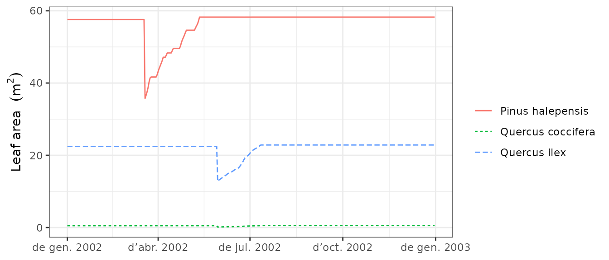

Forest dynamics
Miquel De Caceres
2022-01-31
Source:vignettes/ForestDynamics.Rmd
ForestDynamics.RmdAbout this vignette
This document describes how to run the forest dynamics model of medfate. This document is meant to teach users to run the simulation model within R. Details of the model design and formulation can be found at https://emf-creaf.github.io/medfatebook/index.html.
Preparing model inputs
Any forest dynamics model needs information on climate, vegetation and soils of the forest stand to be simulated. Moreover, since models in medfate differentiate between species, information on species-specific model parameters is also needed. In this subsection we explain the different steps to prepare the data needed to run function fordyn().
Model inputs are explained in greater detail in vignette ‘Simulation inputs’. Here we only review the different steps required to run function fordyn().
Soil, vegetation, meteorology and species data
Soil information needs to be entered as a data frame with soil layers in rows and physical attributes in columns. Soil physical attributes can be initialized to default values, for a given number of layers, using function defaultSoilParams():
spar = defaultSoilParams(4)The soil input for water balance simulation is actually a list of class soil that is created using a function with the same name:
examplesoil = soil(spar)As explained in the package overview, models included in medfate were primarily designed to be ran on forest inventory plots. Here we use the example object provided with the package:
data(exampleforestMED)
exampleforestMED## $ID
## [1] "1"
##
## $patchsize
## [1] 10000
##
## $treeData
## Species N DBH Height Z50 Z95
## 1 148 168 37.55 800 400 2000
## 2 168 384 14.60 660 400 2000
##
## $shrubData
## Species Cover Height Z50 Z95
## 1 165 3.75 80 300 1500
##
## $herbCover
## [1] 10
##
## $herbHeight
## [1] 20
##
## attr(,"class")
## [1] "forest" "list"In the basic water balance, only mean temperature, precipitation and potential evapotranspiration is required, but radiation may also be necessary to simulate snow melt.
## MeanTemperature MinTemperature MaxTemperature Precipitation
## 2001-01-01 3.57668969 -0.5934215 6.287950 4.869109
## 2001-01-02 1.83695972 -2.3662458 4.569737 2.498292
## 2001-01-03 0.09462563 -3.8541036 2.661951 0.000000
## 2001-01-04 1.13866156 -1.8744860 3.097705 5.796973
## 2001-01-05 4.70578690 0.3288287 7.551532 1.884401
## 2001-01-06 4.57036721 0.5461322 7.186784 13.359801
## MeanRelativeHumidity MinRelativeHumidity MaxRelativeHumidity
## 2001-01-01 78.73709 65.15411 100.00000
## 2001-01-02 69.70800 57.43761 94.71780
## 2001-01-03 70.69610 58.77432 94.66823
## 2001-01-04 76.89156 66.84256 95.80950
## 2001-01-05 76.67424 62.97656 100.00000
## 2001-01-06 89.01940 74.25754 100.00000
## Radiation WindSpeed WindDirection PET
## 2001-01-01 12.89251 2.000000 172 1.3212770
## 2001-01-02 13.03079 7.662544 278 2.2185985
## 2001-01-03 16.90722 2.000000 141 1.8045176
## 2001-01-04 11.07275 2.000000 172 0.9200627
## 2001-01-05 13.45205 7.581347 321 2.2914449
## 2001-01-06 12.84841 6.570501 141 1.7255058Finally, simulations in medfate require a data frame with species parameter values, which we load using defaults for Catalonia (NE Spain):
data("SpParamsMED")Simulation control
Apart from data inputs, the behaviour of simulation models can be controlled using a set of global parameters. The default parameterization is obtained using function defaultControl():
control = defaultControl("Granier")Here we will run simulations of forest dynamics using the basic water balance model (i.e. transpirationMode = "Granier"). The complexity of the soil water balance calculations can be changed by using "Sperry" as input to defaultControl(). However, when running fordyn() sub-daily output will never be stored (i.e. setting subdailyResults = TRUE is useless).
Executing the forest dynamics model
In this vignette we will fake a ten-year weather input by repeating the example weather data frame ten times.
meteo = rbind(examplemeteo, examplemeteo, examplemeteo, examplemeteo,
examplemeteo, examplemeteo, examplemeteo, examplemeteo,
examplemeteo, examplemeteo)
row.names(meteo) = seq(as.Date("2001-01-01"),
as.Date("2010-12-29"), by="day")Now we run the forest dynamics model using all inputs (note that no intermediate input object is needed, as in spwb() or growth()):
fd<-fordyn(exampleforestMED, examplesoil, SpParamsMED, meteo, control,
latitude = 41.82592, elevation = 100)## Simulating year 2001 (1/10): (a) Growth/mortality, (b) Recruitment
## Simulating year 2002 (2/10): (a) Growth/mortality, (b) Recruitment
## Simulating year 2003 (3/10): (a) Growth/mortality, (b) Recruitment
## Simulating year 2004 (4/10): (a) Growth/mortality, (b) Recruitment
## Simulating year 2005 (5/10): (a) Growth/mortality, (b) Recruitment
## Simulating year 2006 (6/10): (a) Growth/mortality, (b) Recruitment
## Simulating year 2007 (7/10): (a) Growth/mortality, (b) Recruitment
## Simulating year 2008 (8/10): (a) Growth/mortality, (b) Recruitment
## Simulating year 2009 (9/10): (a) Growth/mortality, (b) Recruitment
## Simulating year 2010 (10/10): (a) Growth/mortality, (b) RecruitmentIt is worth noting that, while fordyn() calls function growth() internally for each simulated year, the verbose option of the control parameters only affects function fordyn() (i.e. all console output from growth() is hidden). Recruitment and summaries are done only once a year at the level of function fordyn().
Inspecting model outputs
Stand, species and cohort summaries and plots
Among other outputs, function fordyn() calculates standard summary statistics that describe the structural and compositional state of the forest at each time step. For example, we can access stand-level statistics using:
fd$StandSummary## Step NumTreeSpecies NumTreeCohorts NumShrubSpecies NumShrubCohorts
## 1 0 2 2 1 1
## 2 1 2 2 1 1
## 3 2 2 2 1 1
## 4 3 2 2 1 1
## 5 4 2 2 1 1
## 6 5 2 2 1 1
## 7 6 2 2 1 1
## 8 7 2 2 1 1
## 9 8 2 2 1 1
## 10 9 2 2 1 1
## 11 10 2 2 1 1
## TreeDensityLive TreeBasalAreaLive DominantTreeHeight DominantTreeDiameter
## 1 552.0000 25.03330 800.0000 37.55000
## 2 549.1704 25.65194 814.9065 38.05014
## 3 546.3553 26.26414 829.5082 38.54404
## 4 543.5547 26.86098 843.6424 39.02610
## 5 540.7607 27.44077 857.2995 39.49578
## 6 537.9888 27.99919 870.4010 39.95011
## 7 535.2310 28.52100 883.1021 40.39428
## 8 532.4873 29.02070 895.4774 40.83074
## 9 529.7503 29.51215 907.6056 41.26216
## 10 527.0348 29.99759 919.5391 41.69029
## 11 524.3479 30.47720 931.2808 42.11518
## QuadraticMeanTreeDiameter HartBeckingIndex ShrubCoverLive BasalAreaDead
## 1 24.02949 53.20353 3.750000 0.0000000
## 2 24.38718 52.36471 2.790020 0.1321714
## 3 24.73996 51.57530 3.003840 0.1353258
## 4 25.08386 50.84169 3.223338 0.1384010
## 5 25.41854 50.16085 3.452169 0.1417767
## 6 25.74194 49.53293 3.683100 0.1442656
## 7 26.04754 48.94614 3.920651 0.1469542
## 8 26.34234 48.39391 4.167142 0.1495289
## 9 26.63299 47.87042 4.424865 0.1524788
## 10 26.92022 47.37074 4.691217 0.1545623
## 11 27.20400 46.89317 4.970607 0.1561709
## ShrubCoverDead BasalAreaCut ShrubCoverCut
## 1 0.00000000 0 0
## 2 0.01376529 0 0
## 3 0.01475248 0 0
## 4 0.01586159 0 0
## 5 0.01705519 0 0
## 6 0.01818750 0 0
## 7 0.01938668 0 0
## 8 0.02062443 0 0
## 9 0.02197336 0 0
## 10 0.02325320 0 0
## 11 0.02450670 0 0Species-level analogous statistics are shown using:
fd$SpeciesSummary## Step Species Name NumCohorts TreeDensityLive TreeBasalAreaLive
## 1 0 148 Pinus halepensis 1 168.0000 18.604547
## 2 0 165 Quercus coccifera 1 NA NA
## 3 0 168 Quercus ilex 1 384.0000 6.428755
## 4 1 148 Pinus halepensis 1 167.1388 19.005518
## 5 1 165 Quercus coccifera 1 NA NA
## 6 1 168 Quercus ilex 1 382.0316 6.646425
## 7 2 148 Pinus halepensis 1 166.2821 19.402150
## 8 2 165 Quercus coccifera 1 NA NA
## 9 2 168 Quercus ilex 1 380.0733 6.861986
## 10 3 148 Pinus halepensis 1 165.4297 19.788540
## 11 3 165 Quercus coccifera 1 NA NA
## 12 3 168 Quercus ilex 1 378.1250 7.072442
## 13 4 148 Pinus halepensis 1 164.5794 20.163533
## 14 4 165 Quercus coccifera 1 NA NA
## 15 4 168 Quercus ilex 1 376.1814 7.277233
## 16 5 148 Pinus halepensis 1 163.7357 20.524341
## 17 5 165 Quercus coccifera 1 NA NA
## 18 5 168 Quercus ilex 1 374.2530 7.474852
## 19 6 148 Pinus halepensis 1 162.8964 20.875700
## 20 6 165 Quercus coccifera 1 NA NA
## 21 6 168 Quercus ilex 1 372.3346 7.645297
## 22 7 148 Pinus halepensis 1 162.0614 21.219934
## 23 7 165 Quercus coccifera 1 NA NA
## 24 7 168 Quercus ilex 1 370.4260 7.800764
## 25 8 148 Pinus halepensis 1 161.2284 21.559331
## 26 8 165 Quercus coccifera 1 NA NA
## 27 8 168 Quercus ilex 1 368.5220 7.952817
## 28 9 148 Pinus halepensis 1 160.4019 21.896228
## 29 9 165 Quercus coccifera 1 NA NA
## 30 9 168 Quercus ilex 1 366.6329 8.101363
## 31 10 148 Pinus halepensis 1 159.5841 22.230893
## 32 10 165 Quercus coccifera 1 NA NA
## 33 10 168 Quercus ilex 1 364.7638 8.246307
## ShrubCoverLive BasalAreaDead ShrubCoverDead BasalAreaCut ShrubCoverCut
## 1 NA 0.00000000 NA 0 NA
## 2 3.750000 NA 0.00000000 NA 0
## 3 NA 0.00000000 NA 0 NA
## 4 NA 0.09792578 NA 0 NA
## 5 2.790020 NA 0.01376529 NA 0
## 6 NA 0.03424565 NA 0 NA
## 7 NA 0.09996942 NA 0 NA
## 8 3.003840 NA 0.01475248 NA 0
## 9 NA 0.03535633 NA 0 NA
## 10 NA 0.10196029 NA 0 NA
## 11 3.223338 NA 0.01586159 NA 0
## 12 NA 0.03644070 NA 0 NA
## 13 NA 0.10417781 NA 0 NA
## 14 3.452169 NA 0.01705519 NA 0
## 15 NA 0.03759888 NA 0 NA
## 16 NA 0.10575150 NA 0 NA
## 17 3.683100 NA 0.01818750 NA 0
## 18 NA 0.03851411 NA 0 NA
## 19 NA 0.10756188 NA 0 NA
## 20 3.920651 NA 0.01938668 NA 0
## 21 NA 0.03939233 NA 0 NA
## 22 NA 0.10933554 NA 0 NA
## 23 4.167142 NA 0.02062443 NA 0
## 24 NA 0.04019337 NA 0 NA
## 25 NA 0.11138941 NA 0 NA
## 26 4.424865 NA 0.02197336 NA 0
## 27 NA 0.04108938 NA 0 NA
## 28 NA 0.11282014 NA 0 NA
## 29 4.691217 NA 0.02325320 NA 0
## 30 NA 0.04174221 NA 0 NA
## 31 NA 0.11391525 NA 0 NA
## 32 4.970607 NA 0.02450670 NA 0
## 33 NA 0.04225562 NA 0 NAPackage medfate provides a simple plot function for objects of class fordyn. For example, we can show the interannual variation in stand-level basal area using:
plot(fd, type = "StandBasalArea")
Tree/shrub tables
Another useful output of fordyn() are tables in long format with cohort structural information (i.e. DBH, height, density, etc) for each time step:
fd$TreeTable## Step Year Cohort Species Name N DBH Height Z50
## 1 0 NA T1_148 148 Pinus halepensis 168.0000 37.55000 800.0000 400
## 2 0 NA T2_168 168 Quercus ilex 384.0000 14.60000 660.0000 400
## 3 1 2001 T1_148 148 Pinus halepensis 167.1388 38.05014 814.9065 400
## 4 1 2001 T2_168 168 Quercus ilex 382.0316 14.88331 669.2197 400
## 5 2 2002 T1_148 148 Pinus halepensis 166.2821 38.54404 829.5082 400
## 6 2 2002 T2_168 168 Quercus ilex 380.0733 15.16164 678.2308 400
## 7 3 2003 T1_148 148 Pinus halepensis 165.4297 39.02610 843.6424 400
## 8 3 2003 T2_168 168 Quercus ilex 378.1250 15.43199 686.9332 400
## 9 4 2004 T1_148 148 Pinus halepensis 164.5794 39.49578 857.2995 400
## 10 4 2004 T2_168 168 Quercus ilex 376.1814 15.69421 695.3223 400
## 11 5 2005 T1_148 148 Pinus halepensis 163.7357 39.95011 870.4010 400
## 12 5 2005 T2_168 168 Quercus ilex 374.2530 15.94680 703.3510 400
## 13 6 2006 T1_148 148 Pinus halepensis 162.8964 40.39428 883.1021 400
## 14 6 2006 T2_168 168 Quercus ilex 372.3346 16.16909 710.3713 400
## 15 7 2007 T1_148 148 Pinus halepensis 162.0614 40.83074 895.4774 400
## 16 7 2007 T2_168 168 Quercus ilex 370.4260 16.37468 716.8278 400
## 17 8 2008 T1_148 148 Pinus halepensis 161.2284 41.26216 907.6056 400
## 18 8 2008 T2_168 168 Quercus ilex 368.5220 16.57616 723.1183 400
## 19 9 2009 T1_148 148 Pinus halepensis 160.4019 41.69029 919.5391 400
## 20 9 2009 T2_168 168 Quercus ilex 366.6329 16.77329 729.2374 400
## 21 10 2010 T1_148 148 Pinus halepensis 159.5841 42.11518 931.2808 400
## 22 10 2010 T2_168 168 Quercus ilex 364.7638 16.96598 735.1828 400
## Z95
## 1 2000
## 2 2000
## 3 2000
## 4 2000
## 5 2000
## 6 2000
## 7 2000
## 8 2000
## 9 2000
## 10 2000
## 11 2000
## 12 2000
## 13 2000
## 14 2000
## 15 2000
## 16 2000
## 17 2000
## 18 2000
## 19 2000
## 20 2000
## 21 2000
## 22 2000The same can be shown for dead trees:
fd$DeadTreeTable## Step Year Cohort Species Name N DBH Height Z50
## 1 1 2001 T1_148 148 Pinus halepensis 0.8611814 38.05014 814.9065 400
## 2 1 2001 T2_168 168 Quercus ilex 1.9684147 14.88331 669.2197 400
## 3 2 2002 T1_148 148 Pinus halepensis 0.8567669 38.54404 829.5082 400
## 4 2 2002 T2_168 168 Quercus ilex 1.9583245 15.16164 678.2308 400
## 5 3 2003 T1_148 148 Pinus halepensis 0.8523751 39.02610 843.6424 400
## 6 3 2003 T2_168 168 Quercus ilex 1.9482859 15.43199 686.9332 400
## 7 4 2004 T1_148 148 Pinus halepensis 0.8503231 39.49578 857.2995 400
## 8 4 2004 T2_168 168 Quercus ilex 1.9435956 15.69421 695.3223 400
## 9 5 2005 T1_148 148 Pinus halepensis 0.8436469 39.95011 870.4010 400
## 10 5 2005 T2_168 168 Quercus ilex 1.9283358 15.94680 703.3510 400
## 11 6 2006 T1_148 148 Pinus halepensis 0.8393223 40.39428 883.1021 400
## 12 6 2006 T2_168 168 Quercus ilex 1.9184510 16.16909 710.3713 400
## 13 7 2007 T1_148 148 Pinus halepensis 0.8350199 40.83074 895.4774 400
## 14 7 2007 T2_168 168 Quercus ilex 1.9086169 16.37468 716.8278 400
## 15 8 2008 T1_148 148 Pinus halepensis 0.8330097 41.26216 907.6056 400
## 16 8 2008 T2_168 168 Quercus ilex 1.9040221 16.57616 723.1183 400
## 17 9 2009 T1_148 148 Pinus halepensis 0.8264694 41.69029 919.5391 400
## 18 9 2009 T2_168 168 Quercus ilex 1.8890730 16.77329 729.2374 400
## 19 10 2010 T1_148 148 Pinus halepensis 0.8177390 42.11518 931.2808 400
## 20 10 2010 T2_168 168 Quercus ilex 1.8691177 16.96598 735.1828 400
## Z95
## 1 2000
## 2 2000
## 3 2000
## 4 2000
## 5 2000
## 6 2000
## 7 2000
## 8 2000
## 9 2000
## 10 2000
## 11 2000
## 12 2000
## 13 2000
## 14 2000
## 15 2000
## 16 2000
## 17 2000
## 18 2000
## 19 2000
## 20 2000Accessing the output from function growth()
Since function fordyn() makes internal calls to function growth(), it stores the result in a vector called GrowthResults, which we can use to inspect intra-annual patterns of desired variables. For example, the following shows the leaf area for individuals of the three cohorts during the second year:
plot(fd$GrowthResults[[2]], "LeafArea", bySpecies = T) Instead of examining year by year, it is possible to plot the whole series of results by passing a fordyn object to the plot() function:
plot(fd, "LeafArea") where we can see the leaf area drop of the second year along with the progressive recovery of the following years.
where we can see the leaf area drop of the second year along with the progressive recovery of the following years.
Finally, we can create interactive plots for particular steps using function shinyplot(), e.g.:
shinyplot(fd$GrowthResults[[1]])Forest dynamics including management
The package allows including forest management in simulations of forest dynamics. This is done in a very flexible manner, in the sense that fordyn() allows the user to supply an arbitrary function implementing a desired management strategy for the stand whose dynamics are to be simulated. The package includes, however, an in-built default function called defaultManagementFunction() along with a flexible parameterization, a list with defaults provided by function defaultManagementArguments().
Here we provide an example of simulations including forest management:
# Default arguments
args <- defaultManagementArguments()
# Here one can modify defaults before calling fordyn()
#
# Simulation
fd<-fordyn(exampleforestMED, examplesoil, SpParamsMED, meteo, control,
latitude = 41.82592, elevation = 100,
management_function = defaultManagementFunction,
management_args = args)## Simulating year 2001 (1/10): (a) Growth/mortality & management [thinning], (b) Recruitment
## Simulating year 2002 (2/10): (a) Growth/mortality & management [none], (b) Recruitment
## Simulating year 2003 (3/10): (a) Growth/mortality & management [none], (b) Recruitment
## Simulating year 2004 (4/10): (a) Growth/mortality & management [thinning], (b) Recruitment
## Simulating year 2005 (5/10): (a) Growth/mortality & management [none], (b) Recruitment
## Simulating year 2006 (6/10): (a) Growth/mortality & management [none], (b) Recruitment
## Simulating year 2007 (7/10): (a) Growth/mortality & management [none], (b) Recruitment
## Simulating year 2008 (8/10): (a) Growth/mortality & management [none], (b) Recruitment
## Simulating year 2009 (9/10): (a) Growth/mortality & management [none], (b) Recruitment
## Simulating year 2010 (10/10): (a) Growth/mortality & management [none], (b) RecruitmentWhen management is included in simulations, two additional tables are produced, corresponding to the trees and shrubs that were cut, e.g.:
fd$CutTreeTable## Step Year Cohort Species Name N DBH Height Z50
## 1 1 2001 T1_148 148 Pinus halepensis 9.226538 38.05014 814.9065 400
## 2 1 2001 T2_168 168 Quercus ilex 382.031585 14.88331 669.2197 400
## 3 4 2004 T1_148 148 Pinus halepensis 46.648237 40.51747 885.0939 400
## Z95
## 1 2000
## 2 2000
## 3 2000